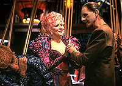

MANCHETE
DO EPISDIO
Roteiro
tenta, sem sucesso, encontrar
romance para Odo, com Lwaxana Troi
Episdio
anterior | Prximo
episdio
Sinopse:
Data Estelar: 46925.1.

Odo
e Lwaxana Troi chegam a um entendimento mtuo quando um defeito
(na realidade um programa de computador aliengena) no computador
central da estao os obriga a ficarem presos em um
turboelevador.
Em tramas secundrias, O'Brien tem que livrar o computador de tal
programa (que ao final reconhecido como mais uma
"solitria forma de vida") e Bashir tem que servir como
cicerone para trs embaixadores da Federao.
Comentrios:
"The Forsaken" uma histria que
no tem a menor razo de ser. Falta foco, enredo, apoio dos
personagens, emoo. Enfim, falta s tudo.
Apenas algumas falas de O'Brien (na trama do 'programa
aliengena', que proporciona "falsa-encrenca"
suficiente para movimentar as trs tramas do episdio), algumas
revelaes sobre o passado de Odo (especialmente sobre o comeo
de sua vida consciente no tempo em que passou em um laboratrio
Bajoriano sob os cuidados do Doutor Mora) e a piada de caserna
"o mais novinho pega a boca torta", estrelando Bashir e
trs insuportveis embaixadores, salvam esta bobagem de receber
o prmio de "o melhor do pior" na primeira temporada.
E, antes de mais nada, Lwaxana no!!! Pelo Grande Pssaro da
Galxia, tenha piedade!!!.
Citaes:
Odo - "Procreation does
not require changing how you smell, or writing bad poetry, or
sacrificing various plants to serve as tokens of affection."
("Procriao no requer mudar como voc cheira, ou
escrever m poesia, ou sacrificar vrias plantas para servir
como presentes de afeio.")
Trivia:
 Primeira (e, infelizmente, no a ltima) das trs
participaes de Majel Barrett como a embaixadora Betazide
Lwaxana Troi durante a srie.
Primeira (e, infelizmente, no a ltima) das trs
participaes de Majel Barrett como a embaixadora Betazide
Lwaxana Troi durante a srie.
Ficha
tcnica:
Histria de Jim Trombetta
Roteiro de Don Carlos Dunaway e Michael Piller
Direo de Les Landau
Exibido em 24/05/1993
Produo: 017
Elenco:
Avery Brooks como
Benjamin Lafayette Sisko
Ren Auberjonois como Odo
Nana Visitor como Kira Nerys
Colm Meaney como Miles Edward O'Brien
Siddig El Fadil como Julian Subatoi Bashir
Armin Shimerman como Quark
Terry Farrell como Jadzia Dax
Cirroc Lofton como Jake Sisko
Elenco convidado:
Majel Barrett como embaixadora Betazide Lwaxana
Troi
Constance Towers como embaixadora humanide
Taxco
Michael Ensign como embaixador Vulcano Lojal
Jack Shearer como embaixador Boliano Vadosia
Benita Andre como Anara